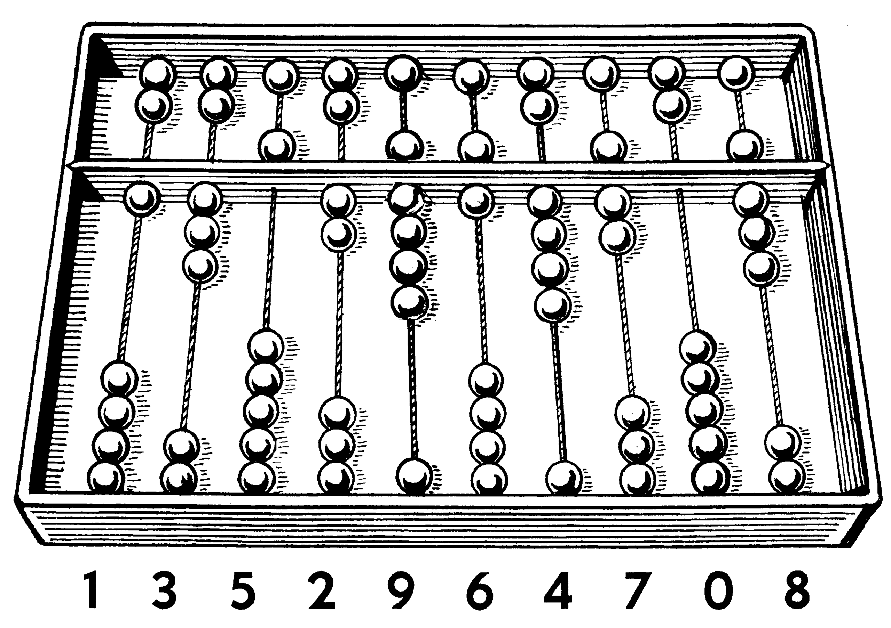
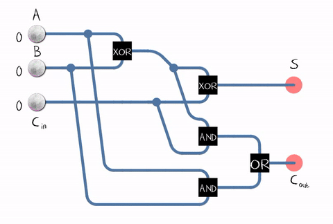

Overview:
What image do these two words conjure in your mind: "computer" and "history"? Perhaps if you're like me, you think back to your family's first Hewlett-Packard Personal Computer. A clunky, heavy, slow, noisy machine - but nonetheless state-of-the-art for its time?
Perhaps you really know your technology and list out facts about the first Macintosh, or even ENIAC? Similarly, you probably know about the "debugging" having to do with bugs shorting out vacuum tubes, long before the transistor was invented. For most people, this is what they know about computers, However, as Computer Scientists we ougt to know much more the history of computing and the gradual process of iterative design that has brought us to where we today.
As we look deeper, the story of computing is less about machines and more about ideas. Counting frames became algorithms; gears and relays gave way to logic gates; and logic became the language by which we describe and solve problems. Each generation refined what came before—sometimes by invention, sometimes by simplification, and often by asking a better question.
Early designers were obsessed with reliability: how to make a system that does the same thing every time. That pursuit led to formal methods, error checking, and careful abstractions. Over time, we learned that the real power of a computer is not in raw speed but in the clarity of the model it presents to the human using it. Good models let ordinary people do extraordinary things.
Another thread in this history is accessibility. Once, computers filled rooms and required teams to operate. Then they fit on desks, then in laps, and now in pockets and on wrists. Each downsizing forced new thinking about interfaces, energy, networking, and security. Constraints, far from limiting progress, became catalysts for creativity.
The First Computer:
The "classical" definition of computer is: an information machine, a data processor, a problem solver, an automation tool. For thousands of years, humans have been in search of tools to make difficult work easier. It's no secret that humans are generally bad at math, which is indeed one of the first instances we see where a "computer" was invented. Meet the abacus, a handy Babalonian device with beads that made counting easier in an era when not even paper, nor pencil, nor eraser yet existed. Imagine yourself as a shop keeper and the novelty of owning an abacus; you no longer need to scratch notes in the dirt or on wet clay in order to keep track of sales and purchases. Perhaps today we take the abacus for granted, but it was nonetheless a critical development in computer science as we'll see below.
In case you didn't know, Mathematics and Computer Science are very closely linked. The abacus was significant because it was a small but crucial component in changing our understanding of mathematics. As a result, the ground work was done for our future generations, once technology caught up. The humble abacus contributed:
- Enhanced calculation abilities - multiplication, accurate handling of large sums.
- Mathematical bases - If the abacus has 10 beads, I've suddenly invented "base 10" arithmetic.
- Algorithmic thinking - I can follow a process, moving the beads along as I follow a process
- Debugging - I can retrace my steps more easily
- Innovation - I can be inspired to design a better abacus
Full Adder Animation:
If you explore modern computing, you'll find that entire CPU processors can be decomposed to series ofgates and latches which hold electrical charges representing zeros and ones. Hence, this is in fact a binary arithmetic system. Essentially, rows of beads have been replaced by silicon and electricity, but the basic idea still bears resemblance to the humble abacus. Below I show a very simple adder circuit, complete with animations to represent the beads, just to drive the point home.